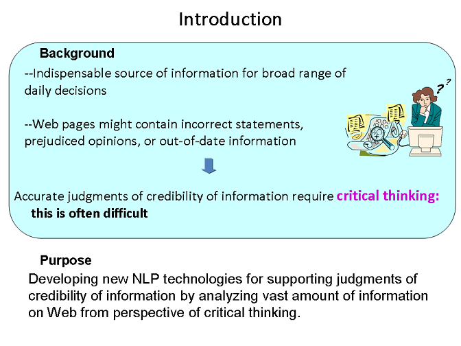
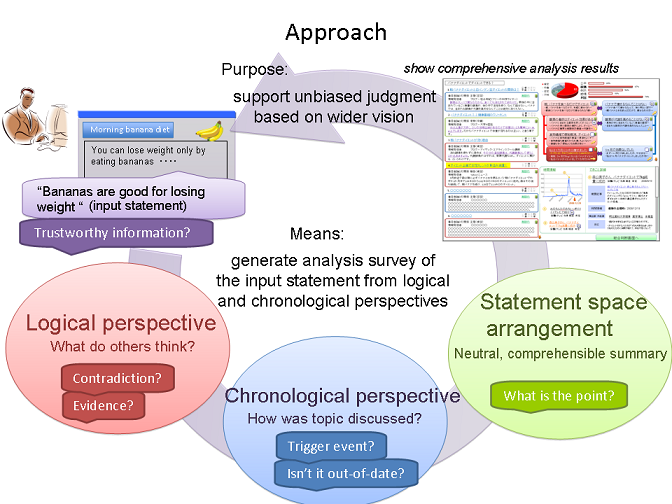

Evaluating Credibility of Web InformationSubject-B: Research on Temporal Analysis of Semantic Contentsgranted by National Institute of Information & Communications Technology (NICT), Japan[English|Japanese]
9/1/2009
IntroductionAn explosive number of documents on the Websphere are becoming an indispensable source of information for a broad range of daily decisions. Web pages, however, sometimes contain incorrect statements, prejudiced opinions, or out-of-date information. Accurate judgment of the credibility of information requires critical thinking--logical, rational interpretation, and evaluation of the information with due consideration of various relevant arguments based on a wider vision. The purpose of our project is to develop new NLP technologies that help humans judge information's credibility based on critical thinking by analyzing a vast amount of Web information. This project is being performed by NEC, the Nara Institute of Science and Technology (NAIST), and Yokohama National University (YNU), and is being supported by the National Institute of Information and Communications of Technology (NICT), Japan. |
|  |
ApproachThe purpose of our project is to help humans judge information's credibility based on critical thinking by analyzing a vast amount of Web information. We are developing new NLP technologies that analyze the relationship between input statements given by users and other statements on the Web from logical and chronological perspectives and provide an overview of relevant statements to support human judgment of their credibility. Our credibility judgment support system receives input statements given by the user, collects other logically related statements such as contradictions and evidences, and shows the selected relevant statements. The user can ponder from various aspects based on these logically related statements. (Logical Perspective) Our system also presents the history of the changes of people's opinions and detects out-of-date information. Users can learn the background of opinions based on their historical changes and avoid invalid information caused by out-of-dateness. (Chronological Perspective) Furthermore, our system generates a survey report that summarizes the relevant statements from logical and chronological perspectives. This summary presents the argument points for comprehending the relations between the statements to help users determine decision criteria based on different opinions from various sources (Statement Space Arrangement) |
|  |
Research IssuesLogical Perspective (NAIST) detail
Statement Space Arrangement (YNU) detail
Chronological Perspective (NEC) detail
Integrated System and Test Demonstration (NEC)An integrated system for credibility judgment support is being developed and will be evaluated in a test demonstration. |
Contact usÅF |